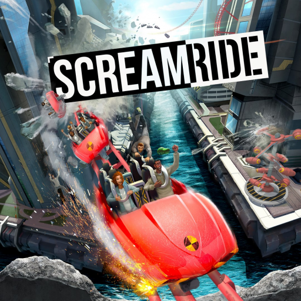

 ScreamRide
Details
 |
|
| Playtime | Not Played |
| Last Activity | Never |
| Added | 4/29/2025 7:31:29 |
| Modified | 4/30/2025 2:42:27 |
| Completion Status | Not Played |
| Library | Playnite |
| Source | |
| Platform | Microsoft Xbox 360 |
| Release Date | 3/3/2015 |
| Community Score | 100 |
| Critic Score | 71 |
| User Score | |
| Genre | Puzzle |
| Developer | Frontier Developments |
| Publisher | Microsoft Studios |
| Feature | Single Player |
| Links | Wikipedia Official website |
| Tag | |
Description
Screamride is a construction simulator and a puzzle video game developed by Frontier Developments and published by Microsoft Studios for the Xbox One and Xbox 360. The game was released worldwide in March 2015.
Gameplay
Screamride features more than 50 levels and three gameplay modes: Engineer, ScreamRider and Demolition Expert. In the Engineering mode, players are tasked to solve development puzzle for roller coaster and thrill rides to meet certain conditions with limited resources. In the Screamrider mode, players can ride and take control of the coasters, with an aim of keeping riders from falling off the coaster. In the Demolition Expert mode, players are tasked with demolishing environments and objects to meet various conditions in order to gain points by throwing cabins with people. All parts of the roller coaster are destructible. Removing any single part will naturally cause derailment of the coasters. Destroying the coaster will also lead to the destruction of buildings. Well placed coaster destruction could lead to explosion, chain reaction and the collapse of a skyscraper. There is also a sandbox mode, which allow players to build coasters with extreme designs with props, ride pieces and modular scenery. Players can create coasters, amusements and environments from the ground-up.
Although the game does not feature multiplayer, it features an online leaderboard. On Xbox One, players could also take control of coasters shared and created by other players through Xbox Live, and could also race with others to ride a coaster as fast as possible and gain "scream rating" through the process, though most of these features have since been discontinued.
Screamride has been regarded by some reviewers as a "spiritual successor" to RollerCoaster Tycoon.
Setting
The game is set in the year 2400 where a number of thrill-seekers are employed by a fictional corporation called Screamworks to experience a variety of extreme roller coasters and rides for the future of humanity and sciences.
Development
The game was announced at Gamescom 2014 during the Microsoft press conference. The release date was announced on November 14, 2014. A demo of the game was released for the Xbox 360 and Xbox One on February 17, 2015.
Reception
Screamride received mixed to positive reviews from critics, with praise particularly directed to the game's fun element, gameplay, destruction, theme and puzzle-design, while receiving criticism regarding the game's difficulty, technical issues and presentation. It received an aggregated score of 75.19% on GameRankings based on 36 reviews and 71/100 on Metacritic based on 54 reviews.
Writing for Game Revolution, Nick Tan gave the game a 4.5/5, praising the game's futuristic theme, rich content, high replayability, addictive gameplay, accessible coaster-building, flexible sandbox mode, which allows players to fully utilize their creativity, as well as the level sharing, which adds free content to the game. He also praised the game for capturing and delivering the "fun factor" that many other modern games lack of, as well as the 3 game modes, which he stated "they all fit together cohesively and challenge your gaming prowess from multiple angles and directions." He summarized the review by saying that "Screamride is a surprisingly remarkable Xbox exclusive. It's truly a game that's greater than the sum of its parts, and yet every part is crafted with care and a sense of excitement."
Writing for IGN, Miranda Sanchez praised the 3 distinct game modes, satisfying destruction and explosion, strategic, tactical and rewarding gameplay, relaxing soundtrack, as well as the control in the Engineer mode, which she stated "simple yet complex enough to build intricate coasters". However, she criticized the frustrating difficulty spike in the career mode and occasional camera and framerate issues.
Arthur Gies from Polygon gave the game an 8/10, praising the environmental destruction, excellent puzzle-design, as well as the gameplay, which offered players freedom and room for experimenting. However, he also criticized the overwhelming amount of coaster pieces and environmental types. He summarized the review by calling the game "one of the first great surprises of 2015."
Kevin VanOrd from GameSpot gave the game a 7/10, while praising the game's user interface, Demolition Expert mode, which he stated "akin to a 3D version of Angry Birds", he criticized the numerous limitations in the Engineer and Sandbox mode. He stated that "Your enjoyment depends on your willingness to cast aside memories of RollerCoaster Tycoon and its freedoms in favor of Screamride's aggressive xtreme attitude and unique mix of construction and destruction."
Joe Juba from Game Informer gave the game a 6.5/10, praising its colourful graphics, while criticizing the unremarkable voice-acting, repetitive soundtrack, locked pieces in the sandbox mode, which only unlocked when the player meet certain point in the campaign mode. He also noted that the game lost its charm and excitement as the game progresses.
Writing for GamesRadar, David Robert gave the game a 2.5/5, criticizing its boring scenarios, dull presentation, unconnected, isolated and compartmentalized game modes. He stated that "Screamride suffers from an identity crisis, and whenever it tries to focus on anything that isn't roller coaster creation, it falls apart."